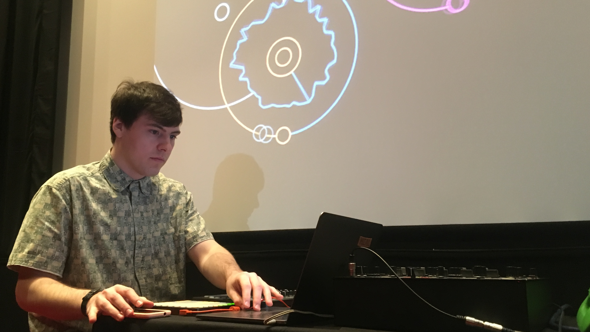
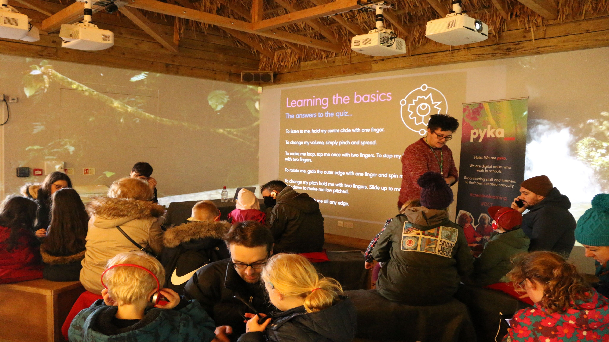
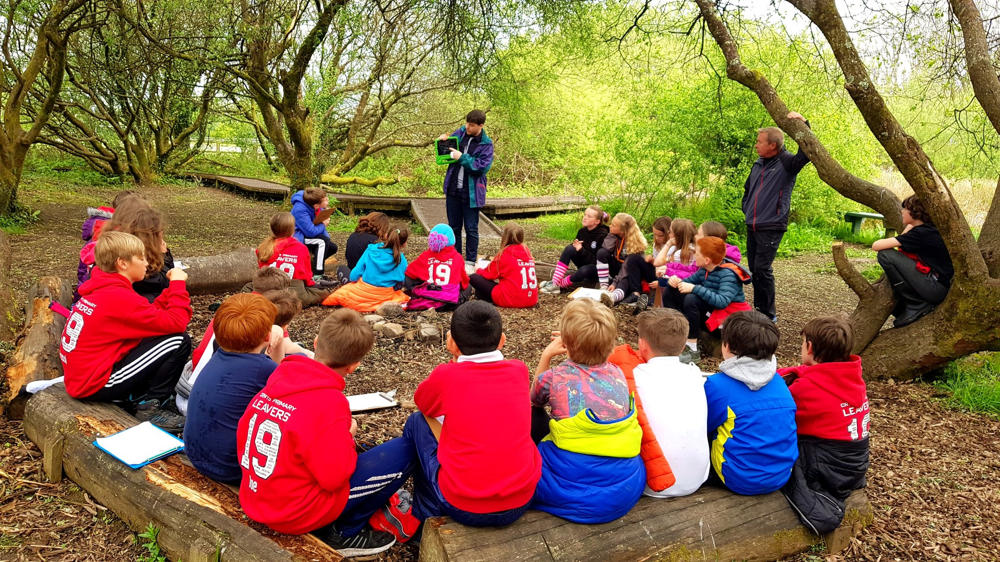
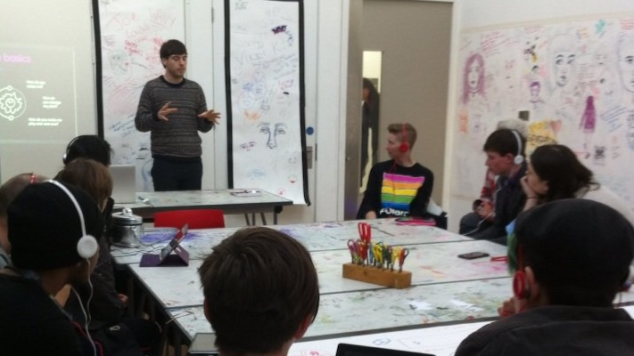

- looper remixes
- 2014-2022
- environmental sound remixes
- music producer and facilitator
- with pyka
- selected remixes ↗
looper remixes were produced as an output for creative engagements with young people in schools and various cultural institutions, including Tate Britain, London Symphony Orchestra, and Chester Zoo. the creative engagements focused on environmental listening and material experimentation, encouraging participants to use pyka_loop as a lens to explore the world around them. participants captured and manipulated found sound to produce looping audio collages, whihch were later remixed together to produce short electronic compositions reflecting the cohort and project.



